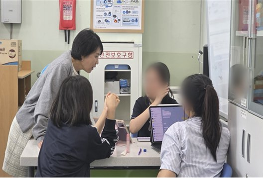
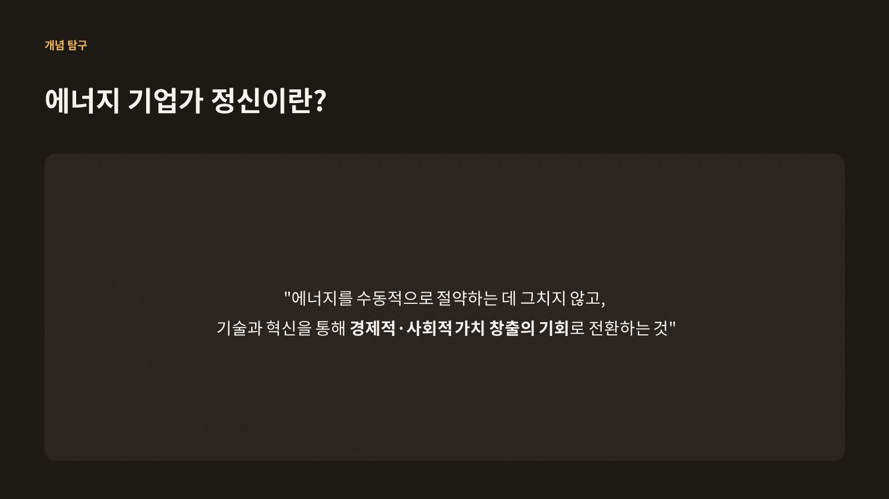
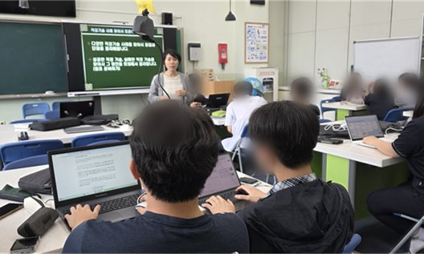
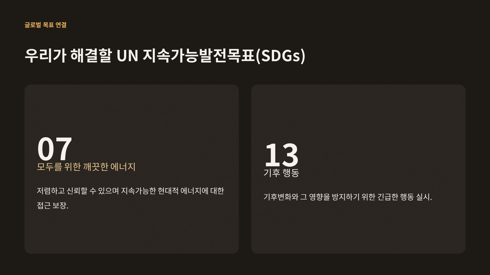
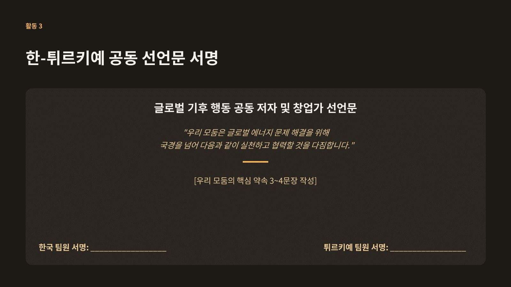
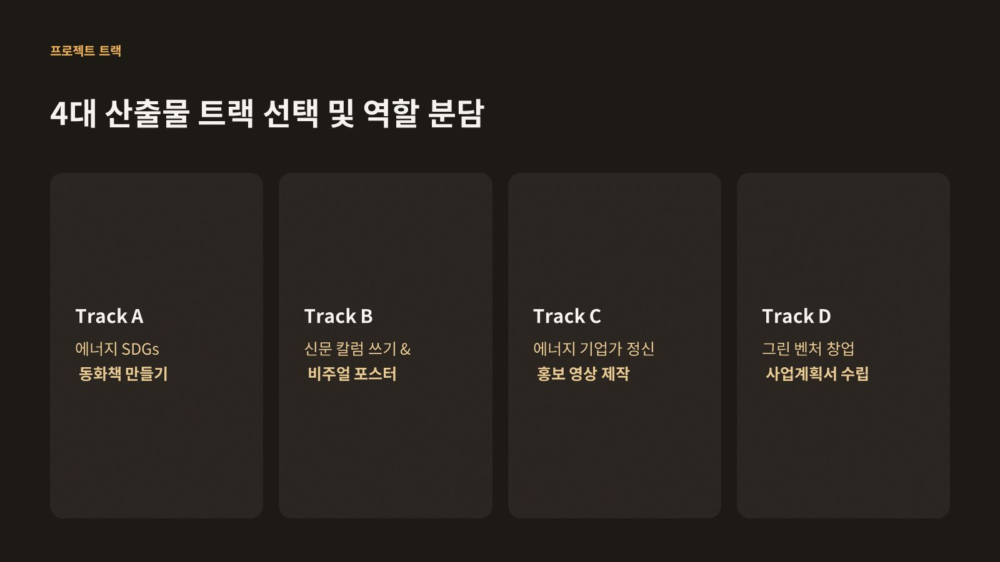

에너지를 기회로
바꾸는 약속
오늘의 목표우리 모둠의 ‘에너지 기업가 정신’을 정의하고, 두 나라 친구들과 공동 선언문을 써요.

수업 흐름
← → 키나 아래 버튼으로 넘겨요. 교사 모드를 켜면 발문·유의점이 보여요.
에너지 기업가 정신이란?
에너지를 수동적으로 절약하는 데 그치지 않고, 기술과 혁신을 통해 경제적·사회적 가치 창출의 기회로 전환하는 것
Energy Entrepreneurship — 이번 프로젝트 전체를 꿰는 핵심 가치예요.

그린 스타트업 & 적정기술 벤치마킹
휴대용 태양광 램프
전력망이 닿지 않는 오지 마을에 빛을 제공해 교육과 안전 문제를 함께 해결.
폐기물 바이오가스
농업 부산물을 가스로 바꿔 지역 주민의 청정 조리 연료로 공급.
P2P 전력 거래 앱
남는 태양광 전력을 이웃과 스마트폰으로 직거래하는 소규모 스마트그리드.
이 사례들은 어떤 문제를 기회로 바꾸었나요?

우리가 해결할 SDGs
07 · 모두를 위한 적정가격의 깨끗한 에너지
Affordable and Clean Energy — 저렴하고 신뢰할 수 있으며 지속가능한 현대적 에너지에 대한 접근 보장.
13 · 기후변화 대응
Climate Action — 기후변화와 그 영향을 방지하기 위한 긴급한 행동 실시.

국경을 넘어 무엇을 약속할까요?
“우리 모둠은 글로벌 에너지 문제 해결을 위해 국경을 넘어 다음과 같이 실천하고 협력할 것을 다짐합니다.” 뒤에 이어질 핵심 약속 3~4문장을 써요. 한국 팀원과 튀르키예 팀원이 함께 서명해요.

우리 모둠의 트랙을 골라요
역할 나누기: 시나리오 기획 · 데이터 조사 · 시각 디자인 · 다국어 번역(한국어/영어/튀르키예어) — 각자의 강점에 맞게!

활동지
활동 2·3 · 기업가 정신과 공동 선언문
쓴 내용은 이 기기의 브라우저에만 저장돼요. 수업이 끝나면 아래 「내 기록 모두 복사」로 모둠 문서에 붙여 두세요.
2에너지 기업가 정신과 SDGs 연계
4우리 모둠의 트랙과 역할
활동 3 한-튀르키예 공동 선언문
핵심 약속을 쓰면 오른쪽 선언문에 바로 새겨져요. 두 나라 팀원이 모두 서명하면 도장이 찍혀요.
CO-AUTHOR & GREEN ENTREPRENEUR DECLARATION글로벌 기후 행동 공동 저자 및
그린 창업가 선언문
“우리 모둠은 글로벌 에너지 문제 해결을 위해 국경을 넘어 다음과 같이 실천하고 협력할 것을 다짐합니다.”
Our group pledges to practice and cooperate as follows to solve global energy problems.
이 차시 슬라이드
2차시 슬라이드 · 10~15장
이 차시 평가
약속에 실천이 보이나요?
[12기지04-01] · 관찰 평가, 활동지 2, 공동 선언문 작성 기록
| 기준 | A | B | C |
|---|---|---|---|
| 기업가 정신 및 SDGs 연계 12기지04-01 | 모둠의 ‘에너지 기업가 정신’ 정의에 해결할 문제·대상·만들 가치(경제적·사회적)가 모두 들어 있고, SDG 7 또는 13의 세부 내용과 연결한다. | 정의는 썼지만 문제·대상·가치 가운데 하나가 빠졌거나, SDG 번호만 적고 연결 이유가 없다. | ‘에너지 절약’ 수준의 정의에 머물고 SDGs 연결이 없다. |
| 공동 선언문 작성 12기지04-01 | 누가·무엇을·언제 할지 드러난 실천 약속을 3개 이상 쓰고, 양국 팀원이 모두 서명한다. | 약속이 3개 미만이거나, ‘노력한다’처럼 실천 행동이 드러나지 않는 문장이 섞여 있다. | 약속이 1개 이하이거나 한 나라 팀원만 참여했다. |
A·B·C는 이 과제의 채점 수준이에요. 학기 성취도(A~E)는 학교 성취평가 기준에 따라 따로 산출해요.
나가기 질문
우리 모둠이 정의한 ‘에너지 기업가 정신’을 한 문장으로 쓰면? 에너지 ‘절약’과 무엇이 다른가요?